用FDex2砸壳从安卓app中导出dex
环境初始化
- 已
root了的安卓4.4+的真机或模拟器- 因为后续的
FDex2要求Android 4.4+ - 此处用的是：
夜神模拟器=Nox App Player- 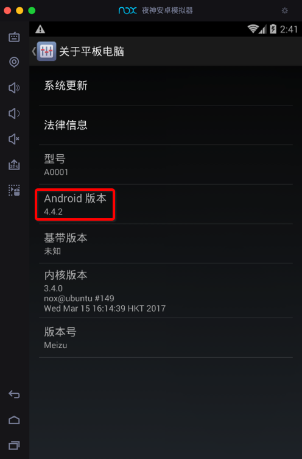
- 去模拟安卓
4.4.2 夜神模拟器已自带root
- 因为后续的
Hook框架- 用于后续安装插件去导出
dex文件 - 此处选用：
XPosed框架- 在安卓中安装
XPosed框架- 之前已安装
XPosed框架- 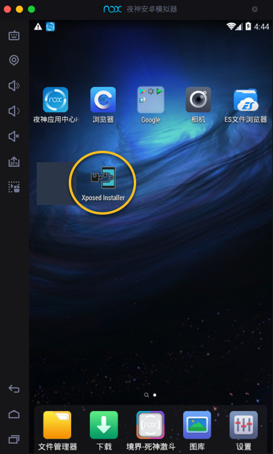
- 之前已安装
- 在安卓中安装
- 用于后续安装插件去导出
- 要破解的安卓apk
- 比如
v3.4.8的小花生的apk：- 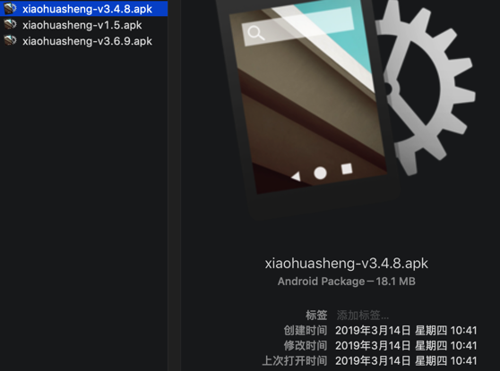
- 比如
- 下载好
FDex2的apk- 从这里下载到
FDex2_1.1.apk- 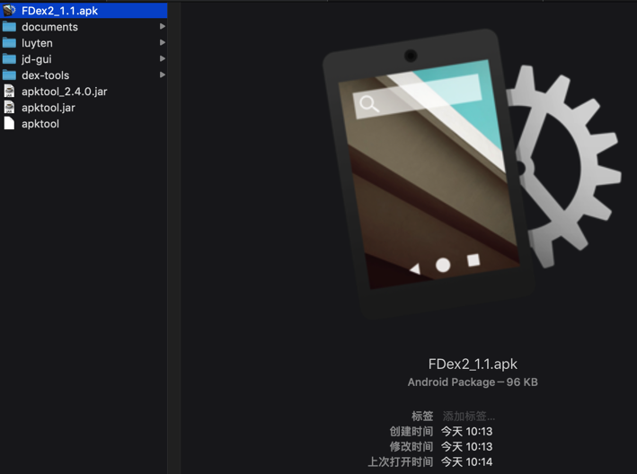
- 从这里下载到
下面以夜神模拟器 + XPosed框架为例解释如何操作。
砸壳导出dex的详细步骤
- 安装要破解的apk
- 把要破解的
apk安装到夜神安卓模拟器中：
- 把要破解的
- 安装和激活
FDex2- 安装
FDex2安装到夜神模拟器中 - 去XPosed里勾选
激活FDex2： 
- 注意：
- 其会提示：
XPosed模块列表已更新，重启后更改将生效 - 所以为了使
FDex2生效，记得去重启XPosed。
- 其会提示：
- 此处的版本是
1.1：- 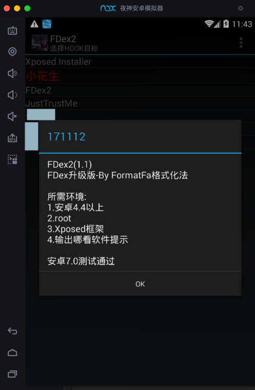
- 安装
FDex2中设置要处理的app- 然后再去打开FDex2，点击此处要破解的app：小花生
- 会提示设置成功：
设置保存成功，请重新打开目标软件，hook包名：
com.huili.readingclubdex输出目录：
/data/data/com.huili.readingclub
- 运行要破解的app
- 正常去打开和运行要破解的app
- 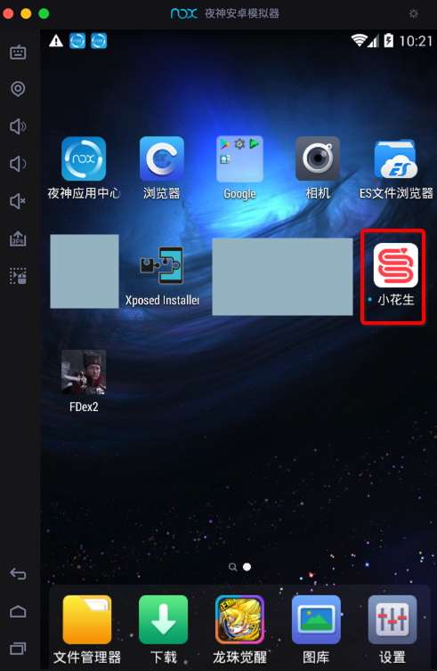
- 注意：
- 其实只要打开了：
- 稍等几秒，即可
- 此处内部
FDex2已经去导出app的所有文件到对应的目录了：/data/data/com.huili.readingclub
- 此处内部
- 但是为了更保险，此处再去：随意点击和切换页面，也点击到了要破解的页面，感觉会更好
- 拷贝出已导出的
dex等文件- 所以接着去对应路径
- 之前
FDex2设置app时已提示的输出路径/data/data/com.huili.readingclub
- 之前
- 找dex文件（和其他相关项目文件）：
- 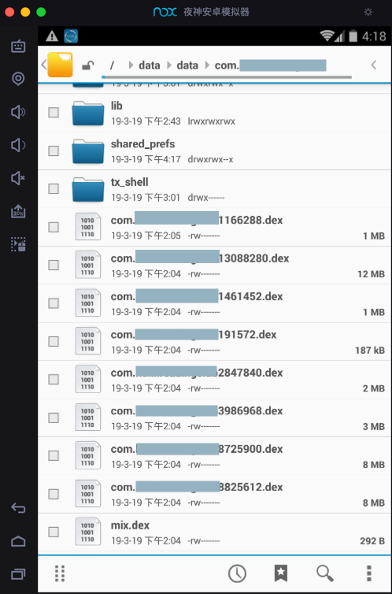
- 并拷贝出来即可
- 所以接着去对应路径
最终拷贝出我们要的dex文件：
➜ v3.4.8 ll
total 81656
-rw------- 1 crifan staff 1.1M 3 19 14:05 com.huili.readingclub1166288.dex
-rw------- 1 crifan staff 12M 3 19 14:04 com.huili.readingclub13088280.dex
-rw------- 1 crifan staff 1.4M 3 19 14:04 com.huili.readingclub1461452.dex
-rw------- 1 crifan staff 187K 3 19 14:04 com.huili.readingclub191572.dex
-rw------- 1 crifan staff 2.7M 3 19 14:04 com.huili.readingclub2847840.dex
-rw------- 1 crifan staff 3.8M 3 19 14:04 com.huili.readingclub3986968.dex
-rw------- 1 crifan staff 8.3M 3 19 14:04 com.huili.readingclub8725900.dex
-rw------- 1 crifan staff 8.4M 3 19 14:04 com.huili.readingclub8825612.dex
注意和说明
如何从夜神模拟器中导出文件到Mac中
此处使用夜神模拟器自带的文件管理器：
- 详细步骤：
- 先把导出的文件拷贝到共享目录
- 勾选
/data/data/下面的com.huili.readingclub- 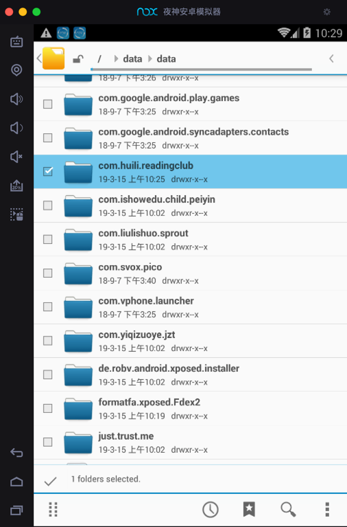
- 切换到夜神用于和电脑共享的文件夹
/mnt/shared/Other中去操作->粘贴选择项- 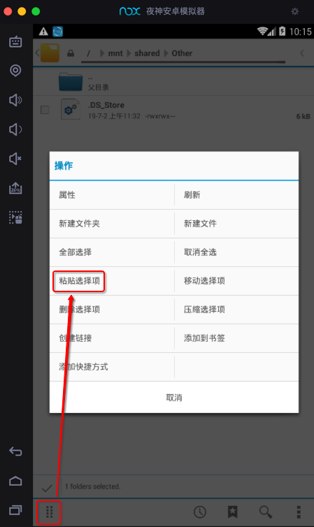
- 然后会开始复制和粘贴：
- 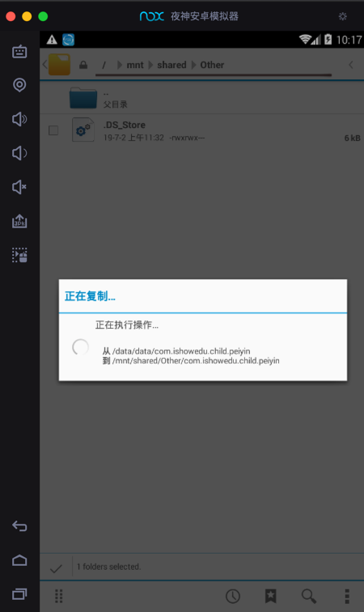
- 复制粘贴后，无法立即看到已拷贝的文件。回到上一级目录，再重新进来即可看到：
- 勾选
- 再去到PC（此处Mac）中找到共享根目录，并拷贝文件
- 夜神模拟器和PC的共享根目录
Windows：- 据说是
C:\Users\{USERNAME}/Nox_share/Other
- 据说是
Mac：/Users/{用户名}/Library/Application Support/Nox App Player/Nox_share- 举例：
/Users/crifan/Library/Application\ Support/Nox\ App\ Player/Nox_share- 说明：其中空格需要
\转义
- 说明：其中空格需要
- 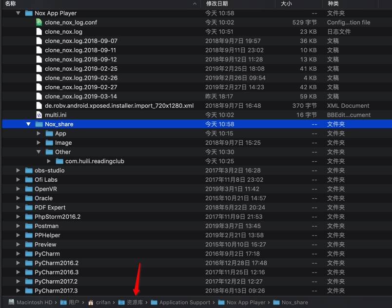
- 夜神模拟器和PC的共享根目录
- 先把导出的文件拷贝到共享目录
没看到我们要导出的dex文件
- 有时候没有看到导出文件，则可以重新多试试几次，即可。
- 有些app（的有些版本），导出的文件中，没有我们希望的（多个dex文件中的某个）包含了app业务逻辑的dex文件
- 说明该apk采用了更加高级的加固，无法导出我们要的dex文件
- 举例：
- 比如小花生的v3.6.9导出的只有一个无效的292B的dex文件：mix.dex
- 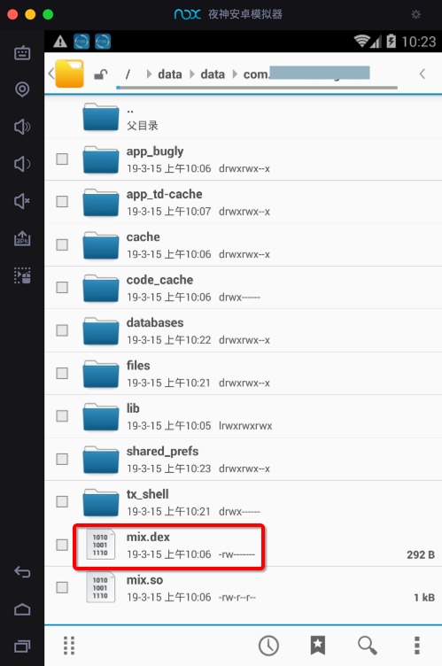